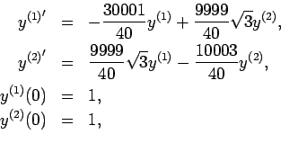
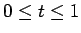
with a step size of h=0.1.
If we let
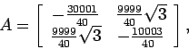
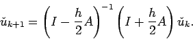
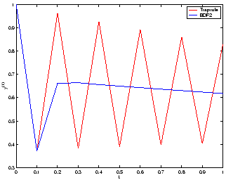
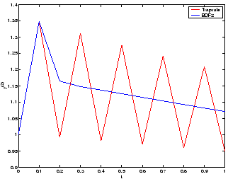
As an exercize, it is good to check the eigenvalues of A, and if you do, you will find that the system is stiff.
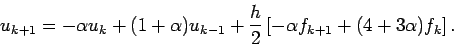
As usual, if you Taylor expand uk+1, fk+1, associate
fk's with uk''s, and collect the remainder terms at each power of h, you will
find that at the first three orders, the value of  does not
matter. However, for h3, we find that the only way to make the
coefficient zero is if
does not
matter. However, for h3, we find that the only way to make the
coefficient zero is if
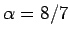
.If you you fiddle around a bit with the region of absolute stability for this method, you find that reason to believe that the method is A-stable for all
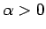
0$">.
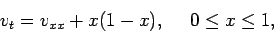
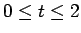
. First, use the explicit first order finite difference scheme with size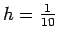
and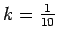
, and then and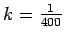
. Next, use Crank-Nicholson with the same parameters, and compare the two methods.
For a modest problem like this, you do not need to worry much about the subtleties of the matrix operations. However, if the mesh were finer, many of the techniques you learned in Math426 would come into play for solving the linear system. Also, different implementations of the algorithm will run faster or slower depending upon how do it.
The first choice of parameters for the explicit method (left) will yield unstable oscillations like the following. Notice that the highest frequencies are amplified most, and be sure to look at the scale on the vertical axes! The higher temporal resolution calculation (right) satisfies the stability requirements and we obtain a more reasonable answer.
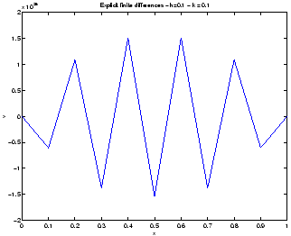
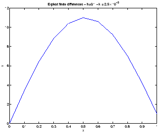
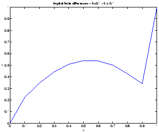
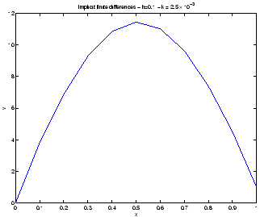